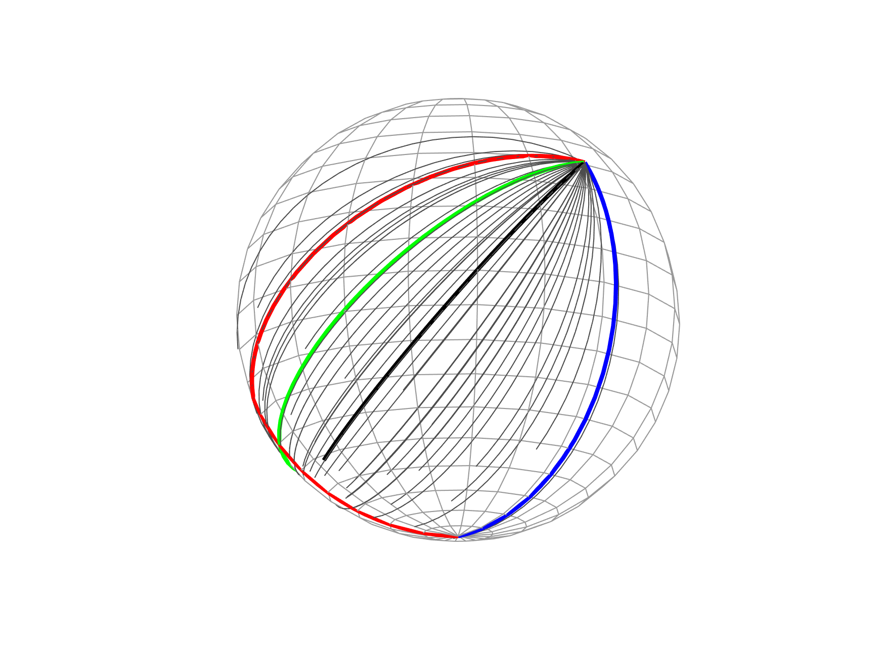
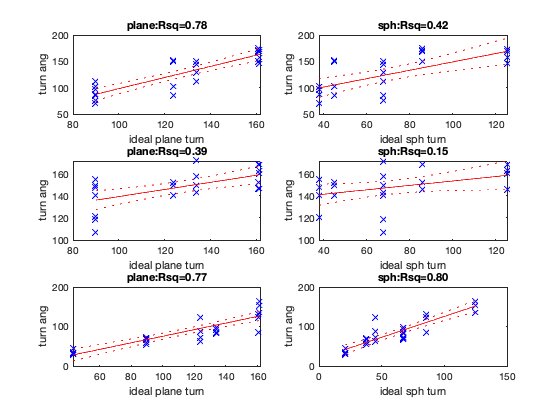

Contents
- for discussion with Angelika Stefan
- load the curated data
- [visiual inspection of the data] display all trajectories on the sphere
- display raw turn angle and ideal turn angle for each model within the same plot (all trials)
- display the linear regression result separately for the plane and sphere geometry model (all trials)
- display the linear regression result separately for the plane and sphere geometry model (individual participants) and compare R square at the group level
- linear mixed model including all data, instead of separately looking individual data
for discussion with Angelika Stefan
triangle completion task data visualisation and analysis 1) this script shows the actual data, ideal plane geometry prediction, ideal sphere geometry prediction 2) run the linear regression within participants and compare Rsquare for the Plane model and Sphere model at the group level 3) linear mixed model using all participants data in the same model then compare BIC between the Plane and Sphere model
% 2022.05.18 MK clear all;close all;clc; [basesph_x,basesph_y,basesph_z]=sphere(20); %prepare a base sphere for display
load the curated data
cleanData_combine=readtable('data_4Angelika.csv'); cleanData_combine=cleanData_combine(~ismember(cleanData_combine.env,'plane'),:); % let's remove the control condition for now.
[visiual inspection of the data] display all trajectories on the sphere
display the raw data on the sphere (3 selected triangle out of 7)
viewangleForTriangle(1,:)=[-180,-40]; viewangleForTriangle(2,:)=[-180,-40]; viewangleForTriangle(3,:)=[-115,-17]; viewangleForTriangle(4,:)=[-115,-17]; viewangleForTriangle(5,:)=[-150,-27]; viewangleForTriangle(6,:)=[-115,-17]; % good view angle for this particular triangle shape on the sphere for shape=[2,5,6]%1:nUniqueShape subtrial=find(cleanData_combine.shapeIdx==shape); % subplot(1,nUniqueShape,shape); figure('Color','w','Name',sprintf('Sph shape%d',shape)); h0=mesh(basesph_x,basesph_y,basesph_z,'FaceAlpha',1,'EdgeColor',[.6,.6,.6]);hold on; view(viewangleForTriangle(shape,1),viewangleForTriangle(shape,2)); xlabel('x');ylabel('y');zlabel('z'); axis equal;xlim([-1 1]);ylim([-1 1]);zlim([-1 1]); axis off; % first show the triangle shape trial=subtrial(1); tmpstate1=[0,pi,0];% start of the first leg = ideal return location for sphere geometry tmpstate2=translateOnSphere(tmpstate1(1),tmpstate1(2),tmpstate1(3),cleanData_combine.dist1InDeg(trial)*pi/180); % start of the second leg tmpstate3=translateOnSphere(tmpstate2(1),tmpstate2(2),tmpstate2(3)+cleanData_combine.turnangInDeg(trial)*pi/180,cleanData_combine.dist2InDeg(trial)*pi/180); % start of the third leg tmpstate4=translateOnSphere(tmpstate3(1),tmpstate3(2),tmpstate3(3)+cleanData_combine.idealPlane_inboundTurn(trial)*pi/180,cleanData_combine.idealPlane_inboundDist(trial)*pi/180); % ideal return location for planar geometry drawGeodesic(sph2cartFn(tmpstate1(1),tmpstate1(2)),sph2cartFn(tmpstate2(1),tmpstate2(2)),'r',1.5); % first leg drawGeodesic(sph2cartFn(tmpstate2(1),tmpstate2(2)),sph2cartFn(tmpstate3(1),tmpstate3(2)),'r',1.5); % second leg drawGeodesic(sph2cartFn(tmpstate3(1),tmpstate3(2)),sph2cartFn(tmpstate1(1),tmpstate1(2)),'b',1.5); % ideal return (sph geometry) drawGeodesic(sph2cartFn(tmpstate3(1),tmpstate3(2)),sph2cartFn(tmpstate4(1),tmpstate4(2)),[.5,.7,.2],1.5); % ideal return (plane geometry) % then display individual trial data stepSize=5;% plot dot every 5 degree, if the step size is larger then the line looks more discrete for trial=subtrial' stepN=round(cleanData_combine.inboundDistInDeg(trial)/stepSize); intermediate_cart=[]; for n=1:stepN intermediate=translateOnSphere(tmpstate3(1),tmpstate3(2),tmpstate3(3)+cleanData_combine.inboundTurnInDeg(trial)*pi/180,cleanData_combine.inboundDistInDeg(trial)*pi/180*(n-1)/(stepN-1)); intermediate_cart(n,:)=sph2cartFn(intermediate(1),intermediate(2)); end plot3(intermediate_cart(:,1),intermediate_cart(:,2),intermediate_cart(:,3),'Color',[0,0,0],'LineWidth',0.25); end isPlotMean=1; if (isPlotMean) %mean respones of all trial for given triangle shape tmpDist=mean(cleanData_combine.inboundDistInDeg(subtrial)); tmpTurn=mean(cleanData_combine.inboundTurnInDeg(subtrial)); stepN=round(cleanData_combine.inboundDistInDeg(trial)/stepSize); intermediate_cart=[]; for n=1:stepN intermediate=translateOnSphere(tmpstate3(1),tmpstate3(2),tmpstate3(3)+tmpTurn*pi/180,tmpDist*pi/180*(n-1)/(stepN-1)); intermediate_cart(n,:)=sph2cartFn(intermediate(1),intermediate(2)); end plot3(intermediate_cart(:,1),intermediate_cart(:,2),intermediate_cart(:,3),'k','LineWidth',1.5); end end
display raw turn angle and ideal turn angle for each model within the same plot (all trials)
[~,unqIdx]=unique(cleanData_combine.shapeIdx); table_triangle=cleanData_combine(unqIdx,["shapeIdx","dist1InDeg","dist2InDeg","turnangInDeg","idealPlane_inboundDist","idealPlane_inboundTurn","idealSph_inboundDist","idealSph_inboundTurn"]); [~,triangleOrder]=sort(table_triangle.idealPlane_inboundTurn); [~,newOrder]=ismember(1:7,triangleOrder); figure('name','sorted by plane turn'); hold on; tmpShapeIdx=cleanData_combine.shapeIdx; h_box=boxplot(cleanData_combine.inboundTurnInDeg,newOrder(tmpShapeIdx)); h_data=plot(newOrder(tmpShapeIdx),cleanData_combine.inboundTurnInDeg,'k.'); hold on; h_plane=plot(1:7,table_triangle.idealPlane_inboundTurn(triangleOrder),'Color',[.5,.7,.2]); h_sph=plot(1:7,table_triangle.idealSph_inboundTurn(triangleOrder),'b'); legend('actual','ideal plane','ideal sph'); ylabel('inbound turn (deg)'); xlabel('triangle shape Idx (sorted by plane turn)')
display the linear regression result separately for the plane and sphere geometry model (all trials)
note, this is probably over confident fit because I combine all particpant's data without partioning the within-subject and across-subject variance for now, just simple visualisation purpose (eye balling)
mdl1=fitlm(cleanData_combine,'inboundTurnInDeg~1+idealPlane_inboundTurn') mdl2=fitlm(cleanData_combine,'inboundTurnInDeg~1+idealSph_inboundTurn') figure; subplot(1,2,1);plot(mdl1);title(sprintf('plane model:Rsq=%.2f',mdl1.Rsquared.Ordinary)); subplot(1,2,2);plot(mdl2);title(sprintf('sph model:Rsq=%.2f',mdl2.Rsquared.Ordinary));
mdl1 =
Linear regression model:
inboundTurnInDeg ~ 1 + idealPlane_inboundTurn
Estimated Coefficients:
Estimate SE tStat pValue
________ ________ ______ _________
(Intercept) 33.74 5.2265 6.4555 3.76e-10
idealPlane_inboundTurn 0.70146 0.041154 17.045 2.035e-47
Number of observations: 339, Error degrees of freedom: 337
Root Mean Squared Error: 25.2
R-squared: 0.463, Adjusted R-Squared: 0.461
F-statistic vs. constant model: 291, p-value = 2.03e-47
mdl2 =
Linear regression model:
inboundTurnInDeg ~ 1 + idealSph_inboundTurn
Estimated Coefficients:
Estimate SE tStat pValue
________ ________ ______ __________
(Intercept) 73.238 3.838 19.082 1.4692e-55
idealSph_inboundTurn 0.67577 0.051263 13.182 2.7452e-32
Number of observations: 339, Error degrees of freedom: 337
Root Mean Squared Error: 27.9
R-squared: 0.34, Adjusted R-Squared: 0.338
F-statistic vs. constant model: 174, p-value = 2.75e-32
display the linear regression result separately for the plane and sphere geometry model (individual participants) and compare R square at the group level
for sub=1:14 tmptrial=cleanData_combine.sub==sub; mdl1=fitlm(cleanData_combine(tmptrial,:),'inboundTurnInDeg~1+idealPlane_inboundTurn'); mdl2=fitlm(cleanData_combine(tmptrial,:),'inboundTurnInDeg~1+idealSph_inboundTurn'); saveModel{sub,1}=mdl1;saveModel{sub,2}=mdl2; sumRsq(sub,1)=mdl1.Rsquared.Ordinary;% R squared for plane geometry model sumRsq(sub,2)=mdl2.Rsquared.Ordinary;% R squared for sph geometry model end option.plotdot=1; option.ticklabel={'plane','sph'};option.showpval=0; option.barColor=[0.47,0.67,0.19;0,0.45,0.74]; figure;ttestplotMK2(sumRsq,option);ylabel('R squared'); tmpdata=sumRsq(:,1)-sumRsq(:,2); [h,p,~,st]=ttest(tmpdata,0,'tail','right'); fprintf('Rsq plane>sph model, one-sided t-test, plane vs. sph, t(%d)=%.1f, p=%.3f, effect size=%.2f \n',st.df,st.tstat,p,mean(tmpdata)/std(tmpdata)); % display a few participant's regression result figure; selectSub=[5,9,11]; for sub=1:length(selectSub) mdl1=saveModel{selectSub(sub),1}; %plane model fit for this subject mdl2=saveModel{selectSub(sub),2};%sph model fit for this subject subplot(3,2,sub*2-1);plot(mdl1);title(sprintf('plane:Rsq=%.2f',mdl1.Rsquared.Ordinary));legend off;ylabel('turn ang'); xlabel('ideal plane turn'); subplot(3,2,sub*2);plot(mdl2);title(sprintf('sph:Rsq=%.2f',mdl2.Rsquared.Ordinary));legend off;ylabel('turn ang'); xlabel('ideal sph turn'); end
Rsq plane>sph model, one-sided t-test, plane vs. sph, t(13)=3.4, p=0.002, effect size=0.92
linear mixed model including all data, instead of separately looking individual data
I will check how BIC changes as I include more subject's data into the model, from 5 subjects to entire 14 subjects
for nSub=5:14; cleandata_sph=cleanData_combine(cleanData_combine.sub<=nSub,:); lme_sphData_turn_planeM=fitlme(cleandata_sph,'inboundTurnInDeg~1+idealPlane_inboundTurn+(1+idealPlane_inboundTurn|sub)'); lme_sphData_turn_sphM=fitlme(cleandata_sph,'inboundTurnInDeg~1+idealSph_inboundTurn+(1+idealSph_inboundTurn|sub)'); BIC_sphData_turn_planeM=lme_sphData_turn_planeM.ModelCriterion.BIC; BIC_sphData_turn_sphM=lme_sphData_turn_sphM.ModelCriterion.BIC; BICdiff=BIC_sphData_turn_sphM-BIC_sphData_turn_planeM; BF_approx=exp(BICdiff/2); fprintf('n=%d, BIC diff=%.1f, BF_approx=%.1E\n',nSub,BICdiff,BF_approx); saveLME{nSub,1}=lme_sphData_turn_planeM; saveLME{nSub,2}=lme_sphData_turn_sphM; end % let's display the LME result when all 14 dataset were included display(lme_sphData_turn_planeM); display(lme_sphData_turn_sphM);
n=5, BIC diff=41.1, BF_approx=8.4E+08
n=6, BIC diff=35.4, BF_approx=4.8E+07
n=7, BIC diff=40.3, BF_approx=5.7E+08
n=8, BIC diff=51.0, BF_approx=1.2E+11
n=9, BIC diff=58.5, BF_approx=5.1E+12
n=10, BIC diff=57.1, BF_approx=2.5E+12
n=11, BIC diff=57.4, BF_approx=3.0E+12
n=12, BIC diff=63.3, BF_approx=5.7E+13
n=13, BIC diff=75.5, BF_approx=2.5E+16
n=14, BIC diff=88.0, BF_approx=1.3E+19
lme_sphData_turn_planeM =
Linear mixed-effects model fit by ML
Model information:
Number of observations 339
Fixed effects coefficients 2
Random effects coefficients 28
Covariance parameters 4
Formula:
Linear Mixed Formula with 2 predictors.
Model fit statistics:
AIC BIC LogLikelihood Deviance
3032.6 3055.5 -1510.3 3020.6
Fixed effects coefficients (95% CIs):
Name Estimate SE tStat DF
{'(Intercept)' } 41.152 10.398 3.9578 337
{'idealPlane_inboundTurn'} 0.64728 0.061904 10.456 337
pValue Lower Upper
9.2271e-05 20.699 61.604
2.3859e-22 0.52552 0.76905
Random effects covariance parameters (95% CIs):
Group: sub (14 Levels)
Name1 Name2
{'(Intercept)' } {'(Intercept)' }
{'idealPlane_inboundTurn'} {'(Intercept)' }
{'idealPlane_inboundTurn'} {'idealPlane_inboundTurn'}
Type Estimate Lower Upper
{'std' } 35.424 22.442 55.914
{'corr'} -0.94731 -0.98725 -0.79516
{'std' } 0.19461 0.11183 0.33866
Group: Error
Name Estimate Lower Upper
{'Res Std'} 19.312 17.848 20.897
lme_sphData_turn_sphM =
Linear mixed-effects model fit by ML
Model information:
Number of observations 339
Fixed effects coefficients 2
Random effects coefficients 28
Covariance parameters 4
Formula:
Linear Mixed Formula with 2 predictors.
Model fit statistics:
AIC BIC LogLikelihood Deviance
3120.6 3143.5 -1554.3 3108.6
Fixed effects coefficients (95% CIs):
Name Estimate SE tStat DF
{'(Intercept)' } 78.192 8.2005 9.535 337
{'idealSph_inboundTurn'} 0.61942 0.068482 9.045 337
pValue Lower Upper
3.0984e-19 62.062 94.323
1.2096e-17 0.48471 0.75412
Random effects covariance parameters (95% CIs):
Group: sub (14 Levels)
Name1 Name2 Type
{'(Intercept)' } {'(Intercept)' } {'std' }
{'idealSph_inboundTurn'} {'(Intercept)' } {'corr'}
{'idealSph_inboundTurn'} {'idealSph_inboundTurn'} {'std' }
Estimate Lower Upper
28.338 18.432 43.569
-0.97191 -0.99899 -0.4279
0.20304 0.11245 0.36661
Group: Error
Name Estimate Lower Upper
{'Res Std'} 22.356 20.661 24.19